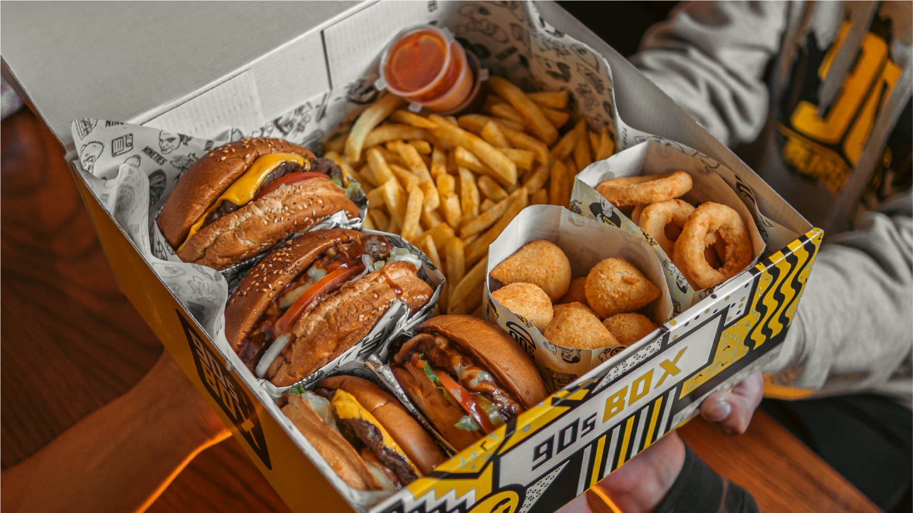

One of the most famous restaurants that serves classic American burgers in the city of Nablus. It is famous for its American character, which is reflected in the modern interior design with yellow and black colors and its comfortable seating that is suitable for families and groups. It offers customers a wonderful selection of burger sandwiches such as regular beef burgers, cheeseburgers with cheddar cheese, and chicken burgers. Fajitas and other items served with crispy potatoes, onion rings and two types of sauce, in addition to delicious soft drinks.
